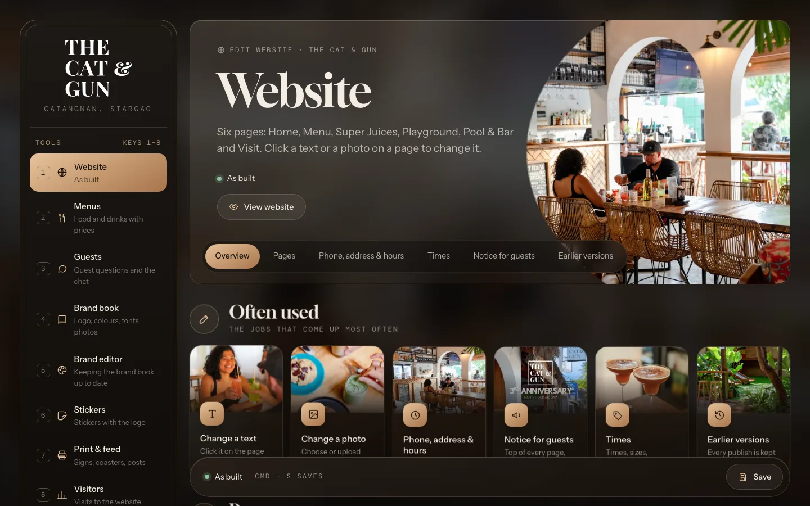
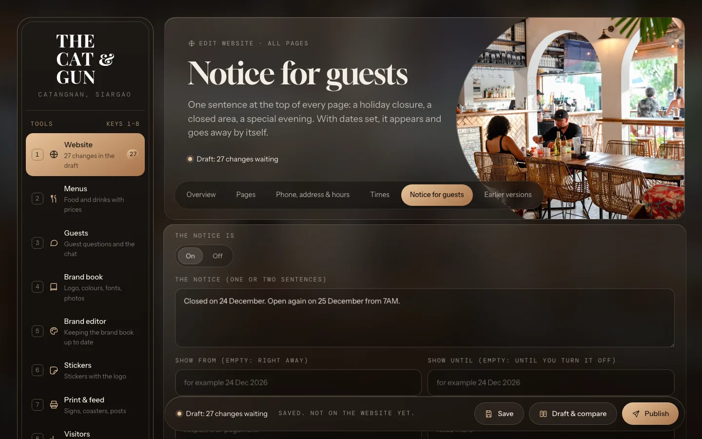
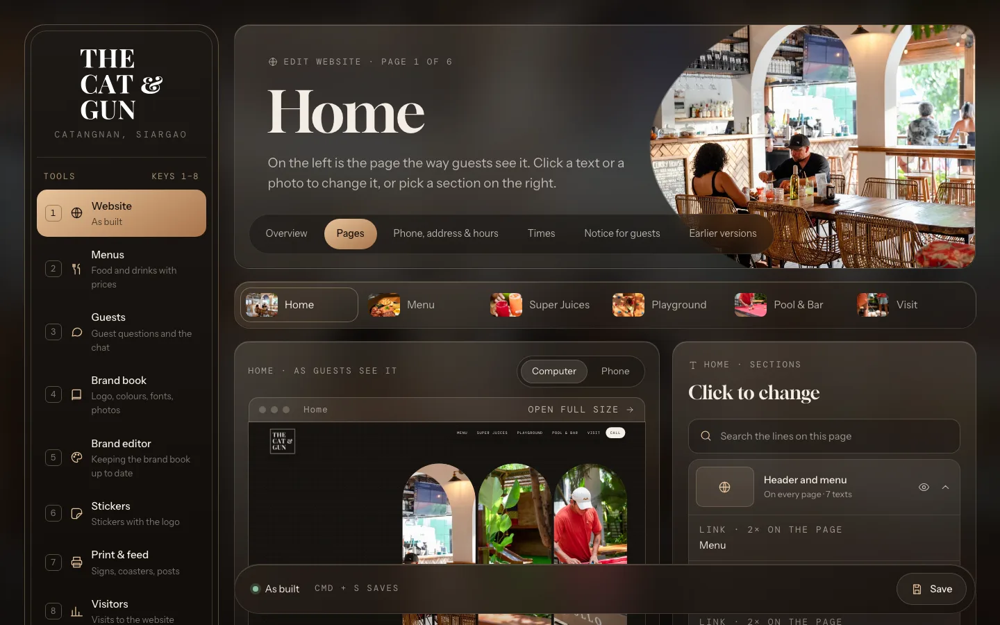
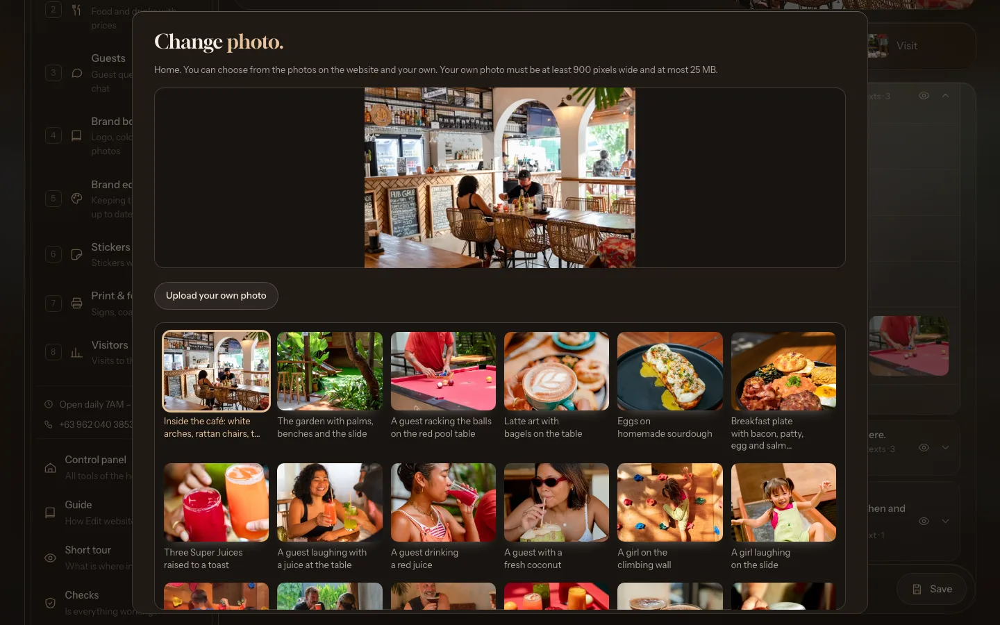
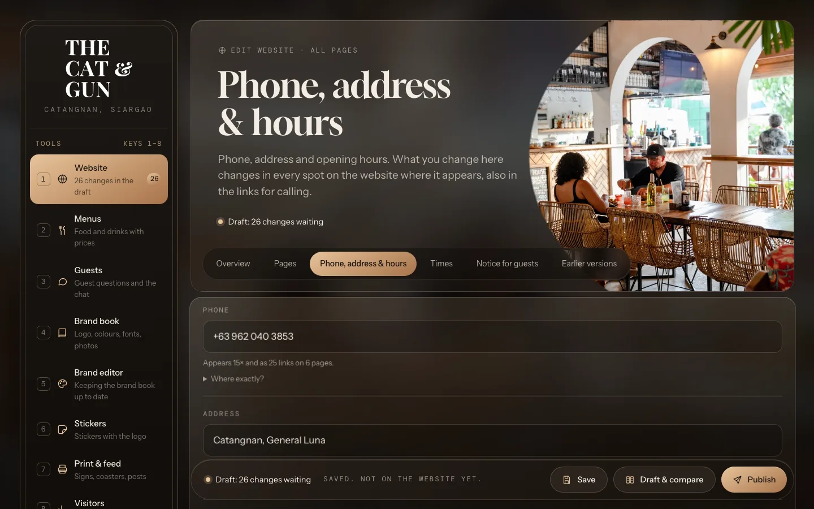
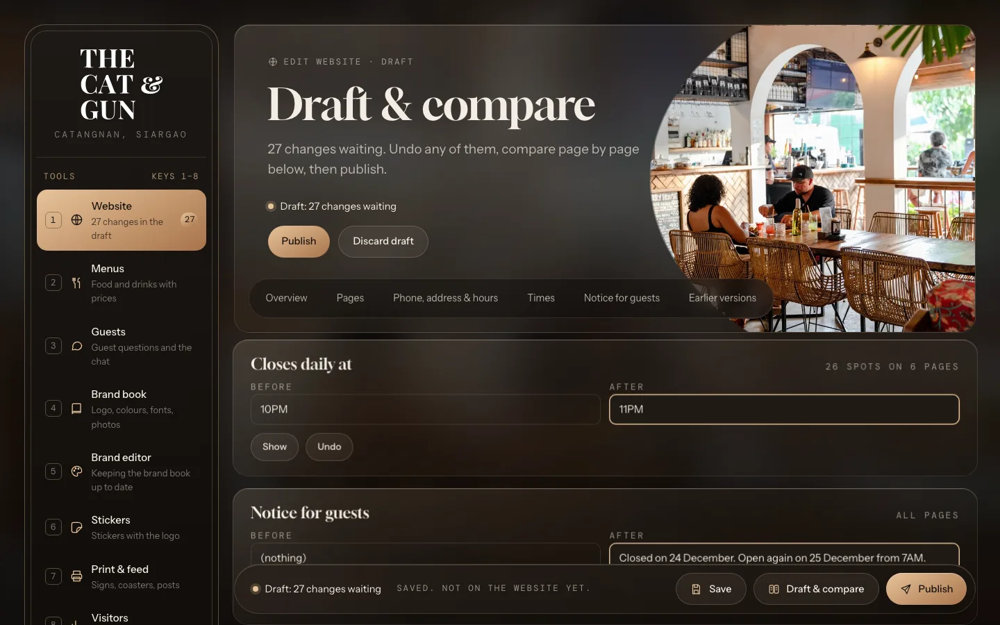
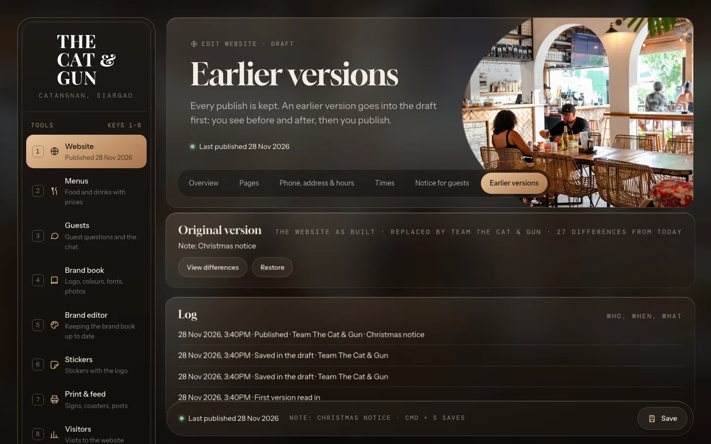

Edit website
How to edit your website.
With “Edit website” you keep the website of The Cat & Gun up to date yourself. You can change every text, every photo, the phone number, the address, the opening hours and a notice for guests. Nothing goes online by itself. What you save waits in the draft until you publish it. Every earlier version can be restored.
1
The Overview
At the top you see when the website was last published, or what is waiting in the draft. Below that are the jobs that come up most often, then every page of the website with its photo: Home, Menu, Super Juices, Playground, Pool & Bar and Visit. At the bottom are the details that are on every page: phone, address, opening hours and the notice for guests.
The tabs under the title lead to the pages, “Phone, address & hours”, “Times”, “Notice for guests” and “Earlier versions”. “Draft & compare” is in the bar at the bottom. On the left are all tools of the house; “Control panel” there takes you back to the start page. On the phone, “Tools” at the top opens this list.

2
A notice for guests
Under “Notice for guests” you write one or two sentences that show at the top of every page. For example, when you are closed for a day or a part of the place is closed. You can switch the notice on and off, and add a link.
If you give it a start and an end date, the notice shows and goes away by itself. Leave the dates empty, and it shows from now on until you switch it off.

3
Change a text
Choose a page, for example “Home”. All pages stand in a row with their photos. On the left is the page the way guests see it, on the right are its sections. Click the text you want to change, on the page or in the list. A field opens in the list, and the page on the left changes as you type.
If the same text is on several pages, the field offers to change it in all spots. “Back to original” brings back the original text. Instead of deleting something, you can hide a whole section and show it again later.
The dishes, drinks and prices on the Menu page are locked here. You change them in “Menus & price lists”.

4
Change a photo or upload your own
Click a photo on the page. You can choose from all photos of the website. “Upload” adds a new one: at least 900 pixels wide, at most 25 MB, as JPG, PNG or WebP. The tool makes the sizes for computer and phone.
Screen readers and search engines read the photo description below. Write one sentence about what is in the photo.

5
Phone, address and opening hours
“Phone, address & hours” lists every detail that appears on many pages, and how often and on how many pages it appears. You change it once, and it is new everywhere, also in the link to call from a phone.
Other times in the text are under “Times”.

6
Save, look, publish
As long as something is not saved, the bar at the bottom says so and the “Save” button lights up. After saving, a short message shows with “Before/After” and “Undo”. Shortcut: Cmd + S on a Mac, Ctrl + S on Windows.
“Draft & compare” shows every change with the old and the new wording. You can undo each one by itself. “Publish” puts the draft on the website, texts and photos together, with a short note for the earlier versions.

7
Restore an earlier version
“Earlier versions” lists every publish with its date and note. “Restore” puts that version in the draft. It goes on the website only when you publish again.

8
When something goes wrong
Every message has a “What to do?” button. It takes you to the checks page. That page works even when the tool itself does not start. It tells you what is wrong and what to do. What you saved is never lost.